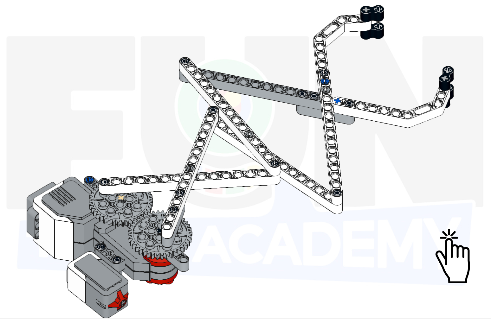

En este tema, construiremos una pinza que se accione al extender el brazo, para que podamos coger cosas que no están a nuestro alcance.

Este proyecto lo dividiremos en dos partes. Por un lado haremos la pinza telescópica que al abrirla se
encoja y al cerrarla se extienda. Una vez tengamos el mecanismo, le añadiremos un motor y un botón para
accionarlo. Si apretamos el botón la pinza se extiende y si lo soltamos, la pinza se encoje.
A continuación, mostraremos un ejemplo de construcción de un brazo telescópico base.
Empezaremos por montar las pinzas que nos van a cojer los objetos.

Como esta pinza tenemos que montar 2, una para cada lado.
Ahora terminaremos uno de los lados añadiéndole más longitud.

Ya tenemos uno de los lados.

Ahora añadimos más longitud a otro de los lados. Este lado lleva alguna pieza más para posteriormente igualar la altura de las pinzas.

Ahora que tenemos las dos pinzas, las unimos por mas o menos el centro.

Debería quedar de la siguiente forma.

Ahora empezamos a añadirle las pinzas extensibles. Montamos una especie de cruceta con las siguientes piezas.

Las unimos y se lo añadimos a las pinzas que ya tenemos montadas.

Debería de quedar así.

Por último le añadimos otra cruceta más con estas piezas.

Las unimos y se lo añadimos a las pinzas que ya tenemos montadas.

Con esto tendríamos nuestras pinzas extensibles y la primera parte del proyecto terminada.

Ahora vamos a añadirle el motor y el botón.
Empezaremos por añadirle al motor una pequeña estructura que sujetará nuestra pinza.

Le añadiremos los engranajes donde engancharemos la pinza para que pueda extenderse.

Debería quedar de esta forma.

Uniremos las pinzas a la estructura del motor a través de los engranajes. Tenemos que engancharlos de una forma simétrica para que funcione correctamente.

Ahora le añadiremos el botón para poder accionar el mecanismo.

Todo unido tendremos el siguiente mecanismo.

Le añadimos el cableado y nos debería de quedar un montaje de este estilo.

La programación para que nos funcione correctamente el botón de nuestra pinza podría ser la siguiente.

Nuestro proyecto terminado y programado funcionaría de la siguiente forma.